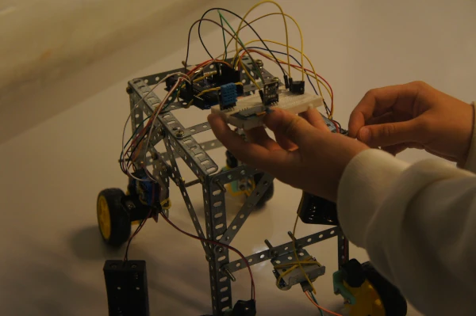

Robótica na escola
O projeto de Robótica aproxima tecnologia, criatividade e resolução de problemas em um espaço de aprendizagem.
A iniciativa faz parte dos projetos apresentados pelo Colégio Estadual Euzébio da Mota.
Sobre o projeto
O projeto de Robótica aproxima tecnologia, criatividade e resolução de problemas em um espaço de aprendizagem.
A iniciativa faz parte dos projetos apresentados pelo Colégio Estadual Euzébio da Mota.

Construção e descoberta
Observar, testar e ajustar são partes de um processo que aproxima ideias, estruturas e diferentes possibilidades de solução.